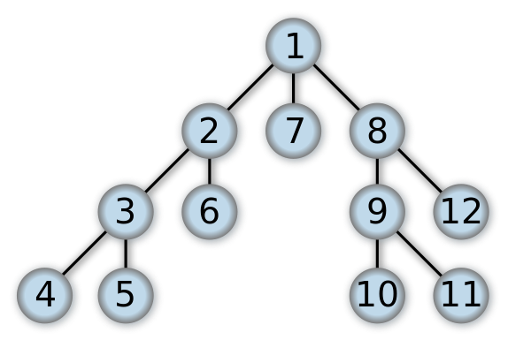
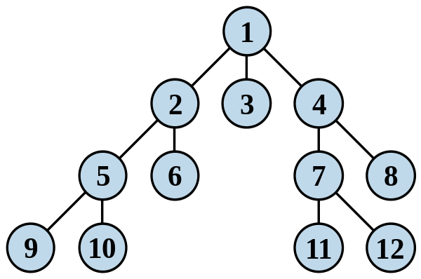

一棵深度为k，且有2^k-1个节点称之为满二叉树。什么意思呢,我们先上图看一下图解
 从图中我们看到，满二叉树，就是h层高的二叉树，有最大的子节点。也就是每个节点都有2^{k-1}个节点
从图中我们看到，满二叉树，就是h层高的二叉树，有最大的子节点。也就是每个节点都有2^{k-1}个节点
深度为k，有n个节点的二叉树，当且仅当其每一个节点都与深度为k的满二叉树中，序号为1至n的节点对应时，称之为完全二叉树。这个也是比较好理解的。他的k-1层是满二叉树，最后一层有1~2^{k-1}个节点
第一次接触这个概念的时间是在大二的时候，时隔多年之后，没想到还是绕回来了，这一次就花点时间记录下二叉树的实现，分析一下可能的用途，产生一个记忆点，并记录起来。真叹息以前大学的时候没能做记录，大把的时间都挥霍于青春！
满二叉树
完全二叉树
一棵深度为k，且有2^k-1个节点称之为满二叉树。什么意思呢,我们先上图看一下图解
深度为k，有n个节点的二叉树，当且仅当其每一个节点都与深度为k的满二叉树中，序号为1至n的节点对应时，称之为完全二叉树。这个也是比较好理解的。他的k-1层是满二叉树，最后一层有1~2^{k-1}个节点
二叉树可以用数组或线性表来存储，而且如果这是满二叉树，这种方法不会浪费空间。用这种紧凑排列，如果一个结点的索引为i，它的子结点能在索引2i+1和2i+2找到，并且它的父节点（如果有）能在索引floor((i-1)/2)找到（假设根节点的索引为0）。这种方法更有利于紧凑存储和更好的访问的局部性，特别是在前序遍历中。然而，它需要连续的存储空间，这样在存储高度为h的n个结点组成的一般普通树时将会浪费很多空间。一种最极坏的情况下如果深度为h的二叉树每个节点只有右孩子需要占用2的h次幂减1，而实际却只有h个结点，空间的浪费太大，这是顺序存储结构的一大缺点。
二叉链表存储表示
在使用记录或内存地址指针的编程语言中，二叉树通常用树结点结构来存储。有时也包含指向唯一的父节点的指针。如果一个结点的子结点个数小于2，一些子结点指针可能为空值，或者为特殊的哨兵结点。 使用链表能避免顺序储存浪费空间的问题，算法和结构相对简单，但使用二叉链表，由于缺乏父链的指引，在找回父节点时需要重新扫描树得知父节点的节点地址。
改进于二叉链表，增加父节点的指引，能更好地实现节点间的访问，不过算法相对复杂。 当二叉树用三叉链表表示时，有N个结点，就会有N+2个空指针。
前(先)序、中序、后序遍历
遍历二叉树：L、D、R分别表示遍历左子树、访问根结点和遍历右子树，则先(根)序遍历二叉树的顺序是DLR，中(根)序遍历二叉树的顺序是LDR，后(根)序遍历二叉树的顺序是LRD。
用二叉树表示下述表达式：a+b*(c-d)-e/f
- 先序遍历的序列是：-+a*b-cd/ef
- 中序遍历的序列是：a+b*c-d-e/f
- 后序遍历的序列是：abcd-*+ef/-
深度优先搜索
深度优先搜索算法（英语：Depth-First-Search，简称DFS）是一种用于遍历或搜索树或图的算法。沿着树的深度遍历树的节点，尽可能深的搜索树的分支。当节点v的所在边都己被探寻过，搜索将回溯到发现节点v的那条边的起始节点。这一过程一直进行到已发现从源节点可达的所有节点为止。如果还存在未被发现的节点，则选择其中一个作为源节点并重复以上过程，整个进程反复进行直到所有节点都被访问为止。属于盲目搜索。

广度优先搜索
广度优先搜索算法（英语：Breadth-First-Search，缩写为BFS），又译作宽度优先搜索，或横向优先搜索，是一种图形搜索算法。简单的说，BFS是从根节点开始，沿着树的宽度遍历树的节点。如果所有节点均被访问，则算法中止。广度优先搜索的实现一般采用open-closed表。
实现方案
1.首先将根节点放入队列中。
2.从队列中取出第一个节点，并检验它是否为目标。
3.若队列为空，表示整张图都检查过了——亦即图中没有欲搜寻的目标。结束搜寻并回传“找不到目标”。
4.重复步骤2。

排序，查找，大规模数据索引。例如SQLite数据库
决策分析
职别系统。等级制度
....